Extern
Pagina 3 din 6. Toate verificările Fără Baliverne despre lumea de dincolo de graniță, cu surse din mai multe părți.
348 articole, cele mai noi întâi.
Trump spune că Washington DC a trecut „de la criminalitate mare la ZERO criminalitate” — dar agresiunile cu armă au crescut 40%, iar declinul a început înainte de Garda Națională
Pe 10 iulie 2026, Donald Trump a scris pe Truth Social că Washington DC „a trecut de la criminalitate mare la ZERO criminalitate” datorită lui. Datele…
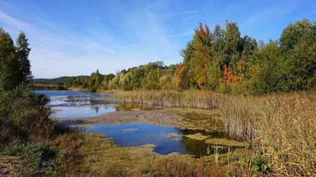
Zelenski spune că Rusia ar putea primi până la 50.000 de soldați nord-coreeni suplimentari. Phenianul neagă, Seulul nu vede semne
Volodimir Zelenski a ridicat, pe 8 august, estimarea privind soldații nord-coreeni pe care Rusia i-ar putea primi la 30.000-50.000, fără să spună pe ce…

Trump spune că economia americană „n-a fost niciodată mai puternică” și că ar câștiga „cu 25 de puncte” — datele oficiale arată o încetinire
Într-un interviu de împăcare cu fostul său avocat Michael Cohen, difuzat integral duminică, 23 august 2026, pe 77 WABC, Donald Trump a spus despre economia…
Cancelarul german Merz, huiduit la vizita în zona afectată de cel mai mare incendiu de vegetație al verii — a apărut public la două zile după stingerea focului
Cancelarul federal german Friedrich Merz a fost întâmpinat cu huiduieli și fluierături la Hürtgenwald (Renania de Nord-Westfalia), acolo unde a mers pe 22…

Prăbușirea minei de aur din Republica Centrafricană: bilanțul oficial e de 49 de morți, deși primele relatări vorbeau de peste 100
O galerie subterană a minei artizanale de aur de la Zamboye, în vestul Republicii Centrafricane, s-a prăbușit pe 18 august 2026. Ministrul Minelor, Rufin…
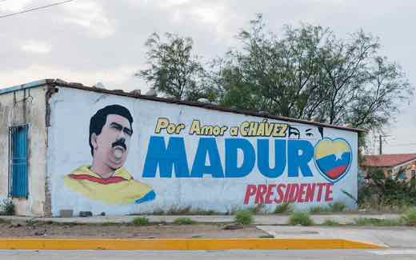
Șase luni după căderea lui Maduro: petrolul crește real în Venezuela, dar inflația a accelerat, nu a scăzut la o singură cifră cum s-a spus
La șase luni de la capturarea lui Nicolás Maduro de către forțele americane (ianuarie 2026), oficiali americani și guvernul interimar condus de Delcy…
Queensland anunță pedepse minime obligatorii pentru minorii care încalcă cauțiunea. Închisorile statului sunt deja la 168% din capacitate
🌍 Guvernul statului australian Queensland a anunțat pe 23 august 2026 pedepse minime obligatorii cu închisoarea pentru minorii care comit o infracțiune cât…
Avioane de vânătoare chinezești J-16 au ajuns în Egipt: prima desfășurare a modelului în Africa, după 6.000 de kilometri
🌍 Avioane chinezești J-16 au aterizat vineri, 22 august 2026, pe o bază aeriană din Egipt, pentru exercițiul comun „Eagles of Civilisation 2026”. SCMP…
Australia: un deputat One Nation a spus că politica partidului pe migrație e „nu foarte diferită” de a guvernului. Liderul partidului l-a corectat în câteva ore
🌍 Deputatul One Nation David Farley a declarat pe 23 august 2026, la emisiunea Insiders de la ABC, că tăierile de migrație propuse de partid ar duce la circa…

Indonezia ia în calcul limitarea carburantului subvenționat după tipul mașinii. Deocamdată e o intenție, nu o decizie
🌍 Guvernul indonezian analizează folosirea tipului de vehicul drept criteriu pentru a stabili cine mai poate cumpăra Pertalite, benzina subvenționată RON 90…
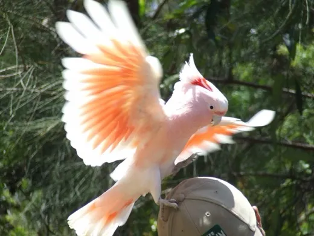
Australia confirmă primul caz de gripă aviară H5 la un mamifer: o focă cu nas lung, găsită în sudul țării
🌍 Ministra federală a Agriculturii, Julie Collins, a anunțat pe 23 august 2026 primul caz confirmat de gripă aviară H5 la un mamifer în Australia — o focă cu…
Comisia ONU pentru drepturile omului avertizează că alegerile din Sudanul de Sud, programate în decembrie 2026, riscă să reaprindă conflictul și „crime de atrocitate”
Comisia ONU pentru Drepturile Omului în Sudanul de Sud a avertizat că „factori de risc multipli pentru crime de atrocitate converg” înaintea primelor alegeri…
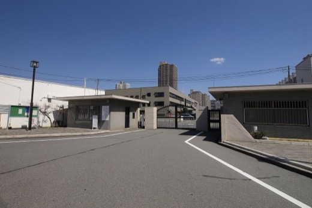
Japonia execută primul condamnat la moarte sub guvernul Takaichi — incendiatorul de la un salon pachinko din Osaka, unde au murit 5 oameni în 2009
Sunao Takami, 58 de ani, a fost spânzurat pe 21 august 2026 la Osaka, condamnat pentru incendierea în 2009 a unui salon pachinko în care au murit 5 oameni și…
Houthii revendică un al treilea atac în două săptămâni asupra unei instalații Aramco — de data asta la Najran. Arabia Saudită nu a confirmat
Purtătorul de cuvânt militar Houthi, Yahya Saree, a declarat pe 20 august 2026 că gruparea a lovit cu două drone aeroportul Najran și o instalație Aramco din…
Iran numește noile sancțiuni americane „declarație de război” împotriva tuturor statelor ONU
🌍 Purtătorul de cuvânt al Ministerului de Externe iranian, Esmaeil Baghaei, a declarat pe 22 august 2026 că noile sancțiuni economice americane anunțate de…
Pentagonul îl demite pe redactorul-șef al Stars and Stripes, la o lună după ce a numit independența editorială o „linie roșie” într-un interviu CBS
Pentagonul le-a trimis vineri, 21 august 2026, notificări de încetare a activității redactorului-șef Erik Slavin, editorului Max Lederer Jr. și reporterei…
Negocierile comerciale SUA-Canada se prăbușesc din nou: Trump impune tarife de 50%, Carney promite răspuns „dolar pentru dolar” din 8 septembrie
Doar două zile după ce SUA și Canada anunțaseră un acord tentativ pe tarife (19-20 august), negocierile s-au prăbușit vineri seară, 21 august 2026, iar…
Angie Nixon, socialistă democrată needcotată de aparat, îl învinge pe Alex Vindman în primarele democrate pentru Senatul SUA din Florida
Deputata de stat Angie Nixon, membră recentă a Democratic Socialists of America, a câștigat marți, 18 august 2026, primarele democrate pentru Senatul SUA din…
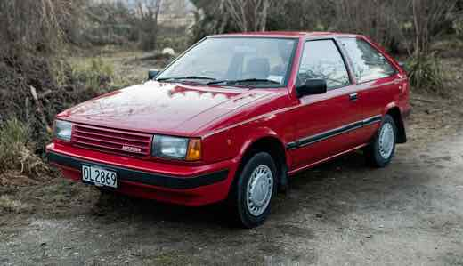
Coreea de Sud: prima grevă generală Hyundai din ultimii 10 ani, muncitorii cer vârstă de pensionare mai mare și protecție față de AI
🌍 Sindicatul Hyundai Motor a organizat vineri, 21 august 2026, prima grevă generală de o zi din ultimii 10 ani, după eșecul negocierilor salariale…
Curtea Supremă a SUA permite temporar continuarea construcției sălii de bal de la Casa Albă
Președintele Curții Supreme, John Roberts, a semnat vineri, 21 august 2026, un ordin administrativ de o singură propoziție prin care suspendă temporar…
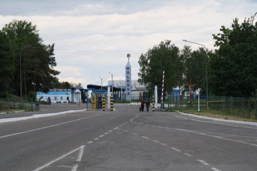
Rusia lovește cu drone Shahed punctul de trecere Tabaky, la frontiera Ucrainei cu Moldova
🌍 În noaptea de 20 spre 21 august 2026, drone rusești Shahed au avariat punctul de trecere internațional Tabaky, la granița Ucrainei cu Republica Moldova, în…
Pezeshkian cere încheierea războiului „dintr-o poziție de putere”, în timp ce economia iraniană se contractă și inflația atinge aproape 70%
Președintele iranian Masoud Pezeshkian a spus vineri, 21 august 2026, că e mai bine ca Teheranul să încheie acum războiul cu SUA și Israel, „cât suntem…
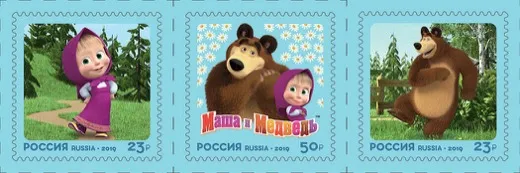
Ucraina sancționează studioul din spatele desenului „Masha și Ursul”, acuzându-l de propagandă rusă — Kremlinul vorbește despre „declarație de război”
Zelenski a semnat, pe 20 august 2026, un decret prin care sancționează Animaccord — studioul rus care produce desenul animat pentru copii „Masha și Ursul” —…
Atac rusesc în două valuri asupra unui mall din Krivîi Rih, orașul natal al lui Zelenski: 14 morți, peste 120 de răniți
Rusia a lovit vineri, 21 august 2026, un centru comercial din Krivîi Rih cu două valuri de drone, la circa 30 de minute distanță — al doilea val a lovit…

China respinge public presiunea lui Trump asupra Iranului — Bessent cere Beijingului să „se alinieze”
🌍 Purtătorul de cuvânt al MAE chinez, Lin Jian, a spus vineri, 21 august, că sancțiunile și presiunea „nu ajută la rezolvarea problemei” Iranului — răspuns…

Candidata susținută de Trump pentru guvernator în Wyoming, Megan Degenfelder, pierde alegerile primare în fața lui Eric Barlow
Senatorul de stat Eric Barlow a câștigat marți, 18 august 2026, primarele republicane pentru guvernator din Wyoming, cu 45% din voturi, față de 29,7% pentru…

Trump spune că un raport al Census Bureau arată 24.000 de non-cetățeni care au votat ilegal în 2020 — experții contestă metodologia
Președintele Trump a susținut pe rețelele sociale că o analiză nepublicată a Census Bureau arată aproximativ 24.000 de voturi ale unor non-cetățeni în…
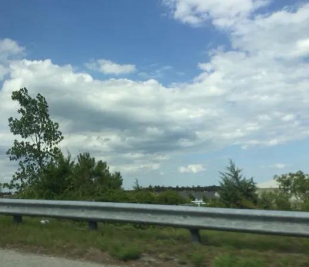
Trump face miting la Myrtle Beach pentru Darline Graham, cu 4 zile înainte de turul doi din Carolina de Sud
Președintele Donald Trump vine vineri, 21 august 2026, la Myrtle Beach Convention Center, ca s-o susțină pe senatoarea interimară Darline Graham, sora…
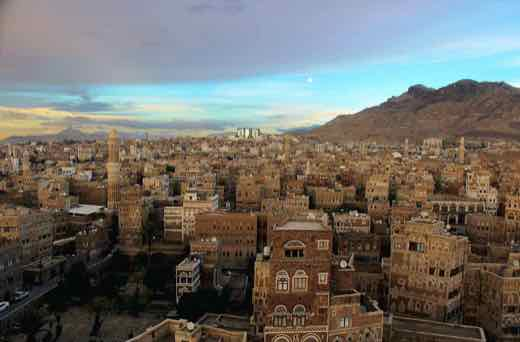
Guvernul yemenit anunță 81 de atacuri „reușite” asupra Houthi într-o zi. Houthi anunță lovituri asupra Arabiei Saudite. Niciuna nu e confirmată independent
🌍 Pe 20 august 2026, guvernul yemenit recunoscut internațional a raportat 81 de atacuri asupra pozițiilor Houthi într-o singură zi, susținând că a…
O femeie din Albany a fost acuzată că plănuia, în numele ISIS, să detoneze o bombă la Capitoliul statului New York
Jessica Bowie, 35 de ani, din Albany, a fost arestată miercuri, 19 august 2026, de FBI și acuzată într-un dosar penal federal de încercarea de a oferi…
Un avion charter s-a prăbușit lângă un sit radar izolat din vestul Alaskăi: au murit toți cei 8 aflați la bord
Un Cessna 441 operat de compania Security Aviation, închiriat de Corpul Ingineresc al Armatei SUA, s-a prăbușit joi, 20 august 2026, lângă situl radar Cape…
Taiwan aprobă buget de apărare record pentru 2027 — 31,4 miliarde de dolari, prima dată peste 3% din PIB
🌍 Guvernul taiwanez a aprobat, în jurul datei de 20 august 2026, un buget de apărare de 1,1225 trilioane de dolari taiwanezi (circa 31,4 miliarde de dolari…

Ambasadorul SUA în India vizitează Kashmirul administrat de India — prima vizită de acest fel din 2019, Pakistanul cheamă diplomatul american să protesteze
🌍 Sergio Gor, ambasadorul SUA în India și trimis special al lui Trump pentru Asia de Sud, a vizitat miercuri și joi, 19-20 august 2026, Srinagar și Ladakh —…

Coreea de Nord a lansat circa 10-12 rachete balistice la câteva ore după ce Trump a spus că se va întâlni cu Kim Jong Un anul acesta
🌍 Armata nord-coreeană a lansat joi, 20 august 2026, în jur de 10-12 rachete balistice cu rază scurtă dinspre zona Phenianului spre Marea de Est/Japonia — la…

Trump promite „cea mai zdrobitoare operațiune economică” împotriva Iranului — Teheran: „terorism economic”
🌍 Donald Trump a anunțat, printr-o postare pe Truth Social pe 19 august 2026, ce a numit „cea mai zdrobitoare operațiune economică luată vreodată împotriva…
Franța, Germania, Italia și Marea Britanie condamnă planul israelian de extindere a coloniei E1 în Cisiordania
Cele patru guverne cer Israelului să renunțe la licitația pentru peste 1.200 de locuințe în zona E1, care ar tăia teritoriul palestinian în două. Ministrul…
Trump spune că Coreea de Nord are „57” de focoase nucleare — Seul estimează între 80 și 120
Trump a citat, miercuri, cifra de 57 de focoase nucleare nord-coreene, apărându-și relația cu Kim Jong Un. Joi, ministrul apărării sud-coreean a spus în…

SUA și Canada anunță un acord tentativ pe tarife — oțelul și aluminiul, înjumătățite la 25%, dar cele două părți se contrazic pe lactate
La două zile după ce Donald Trump a amânat in extremis tariful de 50% pe bunuri canadiene, Canada și SUA au anunțat pe 19-20 august 2026 un acord comercial…
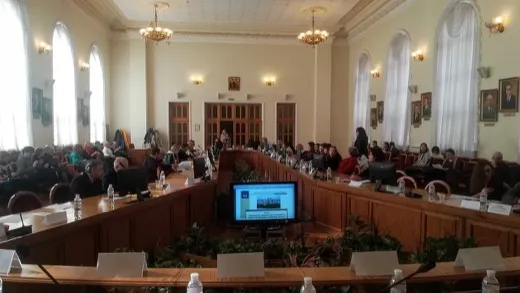
Cel mai amplu atac rusesc asupra Kievului din ultimele săptămâni: bilanțul morților a crescut de la 12 la cel puțin 16, pe măsură ce echipele de salvare căutau sub dărâmături
Rusia a lovit Kievul cu rachete balistice, rachete de croazieră Kalibr și drone în noaptea de 19 spre 20 august 2026, în cel puțin 12 locații din capitală…
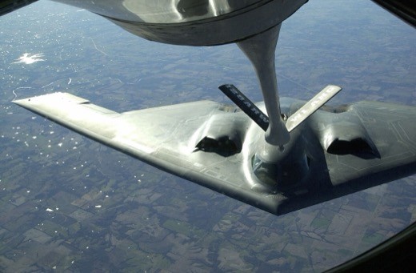
Șeful Statului Major iranian avertizează statele din Golf: orice ajutor logistic pentru avioanele-cisternă americane „echivalează cu participarea” la război
Pe 19 august 2026, generalul-maior Ali Abdollahi, șeful Statului Major al forțelor armate iraniene, a scris pe X că prezența avioanelor-cisternă americane de…
Germania prelungește a patra oară controalele la toate granițele — până în martie 2027, deși Comisia Europeană cere renunțarea treptată
Ministrul german de interne Alexander Dobrindt a notificat Comisia Europeană, pe 18-19 august 2026, că verificările introduse la toate cele nouă granițe…
Kim Yo Jong spune că nu știe de niciun contact recent Trump–Kim și că exercițiile SUA–Coreea de Sud rămân „provocatoare” chiar și scurtate
🌍 Kim Yo Jong, sora liderului nord-coreean Kim Jong Un, a declarat printr-un comunicat KCNA că „nu știe absolut nimic” despre presupuse contacte recente…

Al doilea suspect din ancheta Nord Stream, arestat în Croația — pe platoul unui film despre exact acest sabotaj
Parchetul Federal german a anunțat miercuri, 19 august 2026, arestarea în Croația a scafandrului ucrainean identificat oficial drept „Vladimir Z.” — al…
Fostul ministru al Apărării al Ucrainei cere alegeri în plin război: „Democrația nu poate fi ținută ostatică de Rusia” — a doua zi, Parlamentul confirmă un nou ministru, în plină anchetă de corupție la Kiev
Mykhailo Fedorov, demis în iulie 2026 din funcția de ministru al Apărării după un conflict cu comandantul suprem Oleksandr Syrskyi, a cerut pe 18 august…
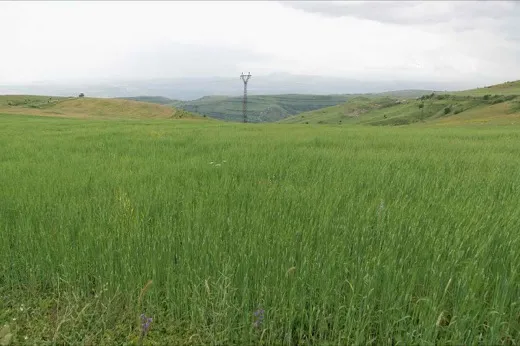
Coreea de Nord a deschis rezervele de stat de cereale în South Hwanghae, după ce fermierii au rămas fără mâncare
Potrivit Daily NK, publicație specializată pe Coreea de Nord care lucrează cu o rețea de surse anonime din interiorul țării, autoritățile nord-coreene au…
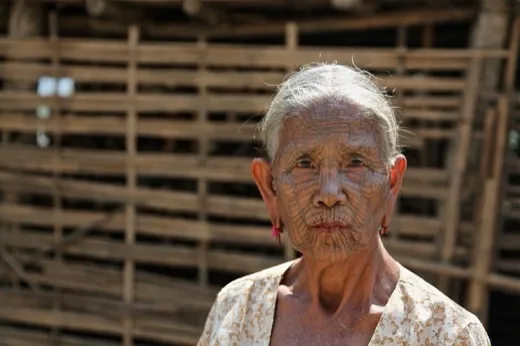
Armata israeliană închide fără acuzații penale ancheta morții lui Zomi Frankcom — Australia cheamă ambasadorul Israel
Armata israeliană (IDF) a anunțat pe 19 august 2026 că nu va înainta acuzații penale în cazul loviturii aeriene din aprilie 2024 asupra unui convoi World…

Ministrul israelian Ben-Gvir cere „30-40 de eliminări pe noapte” în Gaza — Franța, Germania și ONU condamnă declarația
Ministrul israelian al securității naționale, Itamar Ben-Gvir, a spus într-un podcast cu un fost ostatic din Gaza că Israelul ar trebui să „elimine 30-40” de…
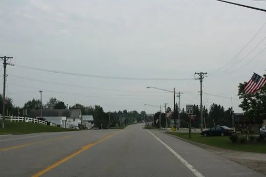
Trump amână cu trei zile tariful de 50% pe bunurile canadiene, la câteva ore de intrarea în vigoare — invocă un „DEAL” cu Carney
Președintele Donald Trump a anunțat în seara de 18 spre 19 august 2026, cu doar câteva ore înainte ca tariful de 50% pe bunuri canadiene de circa 20 de…

Aprobarea lui Trump scade la 33% — minim al celui de-al doilea mandat, egal cu cel mai slab scor din primul mandat
Sondajul Reuters/Ipsos încheiat luni, 17 august 2026, arată aprobarea președintelui Donald Trump la 33%, cel mai slab scor din al doilea mandat și egal cu…
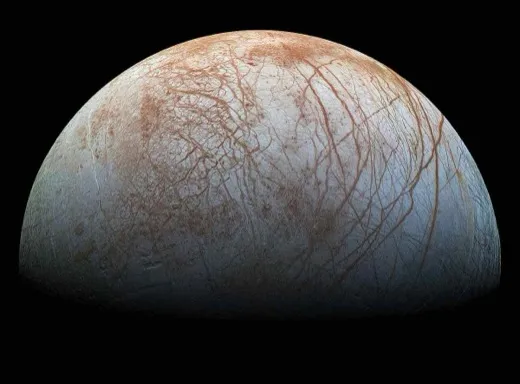
Prețurile la pâine, paste și lactate ar putea crește în Europa — Oxford Economics leagă valul de caniculă și seceta de războiul din Ucraina
Firma de analiză economică Oxford Economics estimează o creștere de două cifre a prețurilor alimentare globale în 2026, pe fondul unei combinații de secetă…
Ministrul chinez de externe Wang Yi ajunge azi la Seul — prima vizită de sine stătătoare din 2021, la două zile după ce Trump a redus exercițiile SUA–Coreea de Sud
🌍 Wang Yi a început miercuri, 19 august 2026, o vizită de două zile la Seul, la invitația ministrului sud-coreean de externe Cho Hyun — prima sa vizită de…
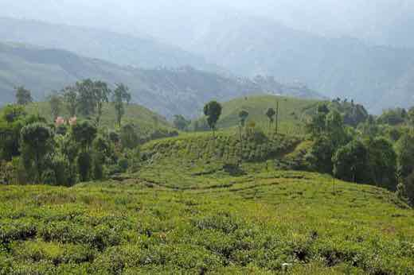
Netanyahu a citat într-un discurs oficial o afirmație atribuită unui general iranian — apărută cu câteva ore înainte pe un cont X anonim din India
🌍 Pe 5 august 2026, un citat atribuit comandantului Gărzilor Revoluționare iraniene, Ahmad Vahidi, despre continuarea programului nuclear a apărut pe un cont…
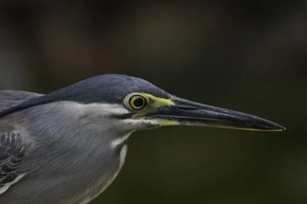
Premierul Malaeziei spune că „Taiwanul e parte a Chinei” — Taipei acuză legitimarea folosirii forței pentru reunificare
Într-un interviu pentru Al Jazeera din 16 august 2026, premierul malaysian Anwar Ibrahim a spus: „Văd Taiwanul ca parte a Chinei, e o singură Chină, e…
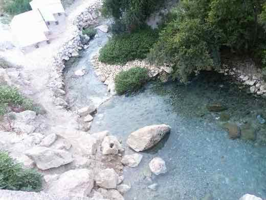
Israel lovește opt raiduri aeriene o bază din Idlib, Siria — prima lovitură asupra activelor guvernului sirian din martie, Turcia respinge acuzațiile
🌍 Israelul a efectuat, în noaptea de 17 spre 18 august 2026, opt raiduri aeriene asupra bazei Abu al-Duhur din provincia Idlib, nord-vestul Siriei, lângă…
Germania a avut cele mai mari exporturi lunare din istorie în iunie 2026, iar încrederea investitorilor a crescut a patra lună la rând, în ciuda nivelului scăzut al Rinului
Oficiul Federal German de Statistică (Destatis) a anunțat pe 7 august 2026 exporturi de 139,3 miliarde de euro în iunie — cel mai ridicat nivel lunar…
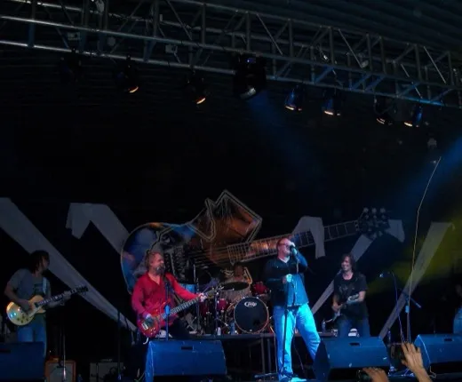
India semnează un contract de leasing de 1.943 de crore rupii pentru două drone MQ-9B Sea Guardian, pentru marina sa
Ministerul indian al Apărării a semnat, pe 17 august 2026, cu General Atomics Aeronautical Systems un contract de leasing pe 30 de luni pentru două drone de…
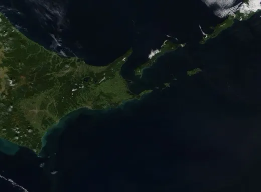
Rusia cheamă ambasadorul Japoniei, în oglindă, după ce Tokyo a protestat față de vizita lui Putin în Kurile
După ce Japonia convocase ambasadorul rus pentru vizita lui Putin pe insula Iturup (13 august 2026), Moscova a convocat, la rândul ei, ambasadorul japonez…
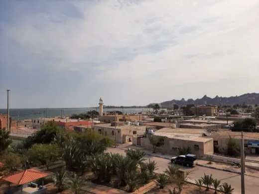
Iranul „a lovit efectiv” în Hormuz: două rachete către Emiratele Arabe Unite și un inginer-șef mort pe un vrachier lângă Oman
Ministerul Apărării al Emiratelor Arabe Unite spune că a detectat două rachete balistice lansate din Iran marți, 18 august 2026 — prima presupusă lovitură a…

Iran amenință cu o postură „pe deplin ofensivă” în Hormuz, chiar în ziua în care a expirat termenul de 60 de zile cu SUA
Un oficial iranian de rang înalt, necitat nominal, a declarat pentru Reuters că Iranul se pregătește să treacă la o postură „pe deplin ofensivă” în…
Rusia trimite Iranului componente de dronă și explozibili prin Marea Caspică, arată un document guvernamental european citat de NBC News
NBC News a obținut un document guvernamental european, verificat de un oficial occidental, potrivit căruia Rusia expediază componente de dronă, muniție și…